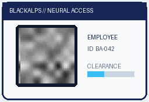

DERRIÈRE
LES FLAGS.
Les agents ont trouvé les failles.
À nous de comprendre le chemin.
Le flag avait disparu.
Il restait des nombres.
Dockerfile.json
model: "gpt2" inputs_embeds: [ 0.1145, −0.3451, 0.2239, … ] [ … ] …
Extrait arrondi des premières valeurs.
Chaque groupe représente un morceau du texte,
avec une information sur sa position.
Notre mission : reconstituer le texte d’origine.
Un morceau de texte.
Une ligne dans une table.
Schéma : les barres représentent des listes de nombres.
Pour distinguer le premier, le deuxième, le troisième…
Le morceau de texte et sa position viennent de deux tables connues.
Retirer la position.
Retrouver le morceau.
Lire un groupe
Les nombres reçus.
Retirer la position
Elle est dans la table publique.
Comparer à la table
Le morceau le plus proche est retrouvé.
Recommencer pour les 24 groupes, puis assembler les morceaux.
Les nombres ont retrouvé
leurs lettres.
Morceaux retrouvés.
Correspondances presque exactes
après retrait de la position.
Dans ce cas, transformer le texte en nombres ne protégeait pas son contenu.
Un compte admin.
Deux portes d’entrée.
Email + mot de passe
Le mot de passe de l’admin
reste inconnu.
Une attestation transmise au site
Le site lit le numéro du compte.
Sur le chemin « legacy », le site ne vérifiait pas la signature.
Écrire « admin »
ne rendait pas admin.
Ajouter « rôle : admin »
Le site ignore cette demande.
Copier l’email de l’admin
Avec un autre identifiant, cela crée un autre compte.
Le numéro qui désigne
un compte Google précis.
Retrouver le compte existant,
avec son rôle enregistré.
Il fallait retrouver l’identifiant du vrai compte admin.
Le numéro était trouvable.
Le site le traitait comme un secret.
Le pied de page
Une adresse Gmail de contact
Un indice sur l’identité de l’admin.
La recherche du compte
Avec une session Google de test
L’adresse permet ici de retrouver un identifiant.
Le bon numéro
À placer dans l’attestation fabriquée.
Le déclic : chercher l’identité au lieu de deviner un mot de passe.
Le bon identifiant.
Une session administrateur.
socialLoginmemberId: 1 · role: admin/api/flagflag retournéLe endpoint « /api/admin/flag » était un leurre : même connecté, il renvoyait 404.
Vérifier la preuve d’identité, pas seulement lire le numéro.
Le programme est là.
Son dictionnaire manque.
03→?04→?19→?Une « machine à pile »
Elle range des valeurs en pile,
puis les copie, les déplace
ou fait des calculs.
Les exemples vont permettre de retrouver le sens des codes.
Essayer une traduction.
La confronter aux exemples.
Attribuer un sens
Quel code veut dire
« copier », « afficher »,
« additionner »… ?
Simuler la machine
Faire passer les exemples
dans cette interprétation.
Comparer les sorties
Éliminer les dictionnaires
qui donnent un autre résultat.
QUI LES SATISFAIT TOUS
Une bonne interprétation doit réussir tous les tests fournis.
La machine retrouve sa langue.
Le message devient lisible.
03copier le sommet04émettre un octet19additionnerTrois exemples du dictionnaire retrouvé.
Codes écrits en hexadécimal.
Solve : Codex · Sortie enregistrée du solveur.
Les résultats connus ont servi de mode d’emploi pour lire l’inconnu.
Le programme d’une balise.
Un secret derrière un code.
beacon_flash.bin
Une copie de la mémoire
d’un appareil ESP32-C6.
Code d’activation ?
Le bon code autorise
le décodage de l’enregistrement.
BA26{n0t_th15_0n3_k33p_d1gg1ng}Présent en clair, mais ce n’est pas le résultat recherché.
Trouver un texte qui ressemble à un flag ne suffit pas à prouver le solve.
Le programme contenait
la recette du code.
LilyGO T7-C6BA26-BEACON-01Transformer
et combiner
Reproduire les opérations
que fait le programme.
Retrouvé par l’agent.
Lire les 31 octets de l’enregistrement.
L’agent a reproduit le calcul : pas besoin de tester tous les codes.
Suivre la bonne branche.
Lire le vrai enregistrement.
Solve : Codex · Résultat du solveur hors ligne.
La preuve vient du chemin de décodage, pas d’un texte trouvé au hasard.
On demande un fichier.
Le serveur suit le chemin.
Les fichiers de notre compte.
../remonter↗Le code et la base de comptes.
/download/…Chemin contrôlé/raw?filename=…Chemin non contrôléLe point faible : laisser un nom de fichier sortir du dossier prévu.
Un faux flag dans la base.
Une vraie piste juste à côté.
Lire les comptes
La base contient aussi
un compte administrateur.
Se connecter
Le tableau de bord admin
montre d’autres fichiers.
Suivre l’indice
flag.txt indique que le flag
est caché dans flag.maze.
Le bon chemin mène à un labyrinthe de caractères.
Le chemin vers la sortie
écrit le flag.
1. Partir de l’entrée.
2. Explorer les passages accessibles.
3. Lire les lettres du chemin vers la sortie.
BA26{tHis_Is_a_rEally_loNG_flag_…}L’accès aux fichiers ouvre la porte. Le parcours du labyrinthe donne la réponse.
Pour entrer comme admin,
il faut convaincre un modèle.

Classé « EMPLOYEE ».
Le seuil à dépasser pour obtenir l’accès.
On peut modifier l’image et observer le score renvoyé à chaque essai.
Changer quelques pixels.
Regarder dans quel sens aller.
Créer des variantes
De petites modifications
autour du badge courant.
Comparer les scores
Quelles modifications
rapprochent de « ADMIN » ?
Avancer et répéter
Ajuster l’image dans
la direction estimée.
Les scores servent de guide, sans connaître les poids du modèle.
Ce badge ne ressemble pas à un admin.
Le modèle l’accepte pourtant.
Seuil demandé : 99,5 %.
BA26{r3ached_1h3_t0P}Une décision d’accès fondée sur une image peut être pilotée par les scores exposés.
La radio contient les messages.
Le firmware donne les règles.
d’enregistrement radio
Ce qu’une balance connectée
a envoyé à sa passerelle.
une copie du firmware
Le programme embarqué :
protocole et méthode de chiffrement.
Il faut faire parler les deux fichiers ensemble.
Avant de déchiffrer,
il faut retrouver les paquets.
Reconnaître les motifs
utilisés par Zigbee.
Contrôles d’erreur valides.
Le contrôle d’erreur confirme que les octets ont été correctement décodés.
Au moment de rejoindre le réseau,
la balance reçoit une clé.
La clé réseau y est protégée à partir d’une clé par défaut connue.
Clé par défaut
ZigBeeAlliance09Point de départ connu.
Clé réseau
Retrouvée dans l’échange
qui accueille la balance.
6 fragments
Les rapports s’ouvrent.
Le contenu reste encore protégé.
Le premier verrou s’ouvre. Il reste une couche propre à l’application.
La dernière clé dépend
de l’identité de la balance.
Déchiffrer chaque fragment avec RC4,
puis les assembler dans l’ordre.
La radio apporte l’identité et les données. Le firmware explique la dernière couche.
Faire rentrer les 22 pilotes.
Ce qu’on veut faire accepter.
La preuve que l’ordre est autorisé.
Elle vérifie la signature. Elle est dans le binaire.
Connaître le message ne suffit pas.
Il faut une signature pour chacun des 22 pilotes.
Le nombre secret avait
255 valeurs possibles.
On peut essayer toutes les valeurs.
Calculer r, puis comparer au r observé.
La même valeur de r ? Le nonce est retrouvé.Le message est chiffré. Sa signature (r, s) est visible.
Le texte était chiffré.
Mais facile à énumérer.
Prédire l’horloge
et le générateur.
Reproduire la suite de nombres
pour retrouver le texte.
[pilote] Activate ECU mode {x}[pilote] Go plan {L}{signe}{tour}[pilote] Pit window lap {tour}, {pneu}Exemples des modèles de messages du solveur.
Essayer chaque message possible,
puis vérifier la clé obtenue.
de deviner l’heure.
Retrouver une clé.
Vérifier que c’est la bonne.
On le vérifie avec sa clé publique, connue depuis le début.
Le solveur a confirmé 22 clés privées sur 22.
0 ÉCHECTout le plateau.
Au stand.
« FULL GRID PIT CALL —
CHAOS IN THE PIT LANE »
Solve : Claude · Résultat enregistré dans final_resp.txt
Un nonce minuscule + des messages prévisibles
ont suffi à récupérer les clés de signature.
Le flag termine la recherche.
La preuve raconte le solve.
Identifier le verrou
Qu’est-ce que le système vérifie vraiment ?
Trouver l’hypothèse fragile
Un identifiant, un score ou des nombres suffisent-ils ?
Confirmer le résultat
Une sortie conservée, un test de clé, un flag réel.
Les agents ont trouvé les chemins. Nous pouvons maintenant les expliquer.